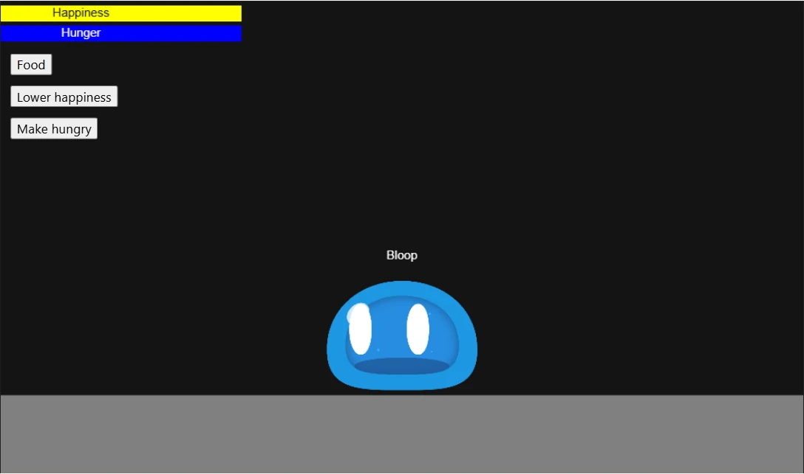
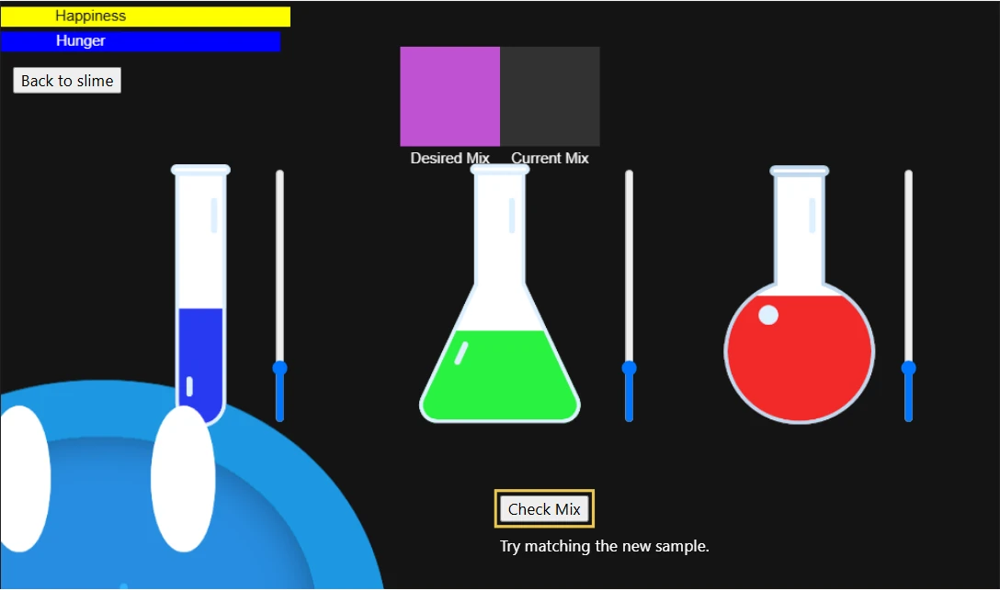

All projects
Interactive sketch
Slime-O-Matic 3000
Build a little slime by choosing its size, selecting a colour, and giving it a name.





The project
The interface is drawn as a lab machine. Its controls pass the player’s choices into the creation sequence, so changing the settings changes the slime that appears.
After creating a slime, visitors can mix coloured potions in the food room and track its hunger and happiness.
What it uses
- JavaScript and p5.js
- Procedural animation
- Custom interface illustration